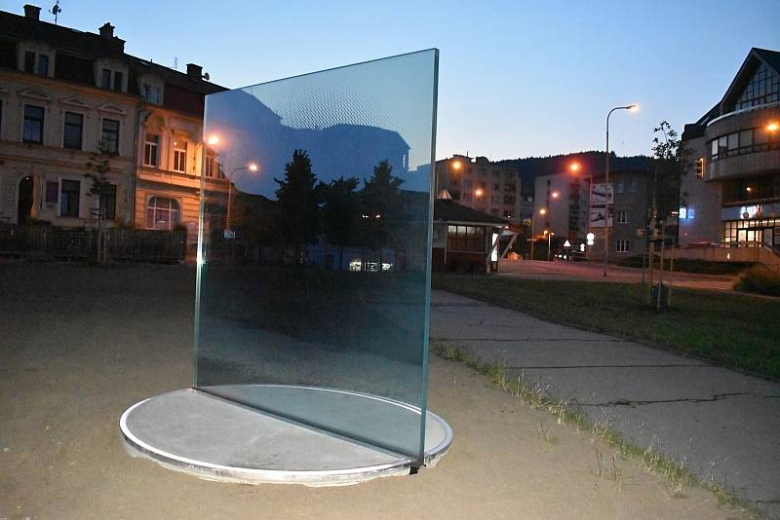
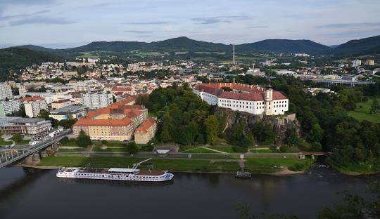
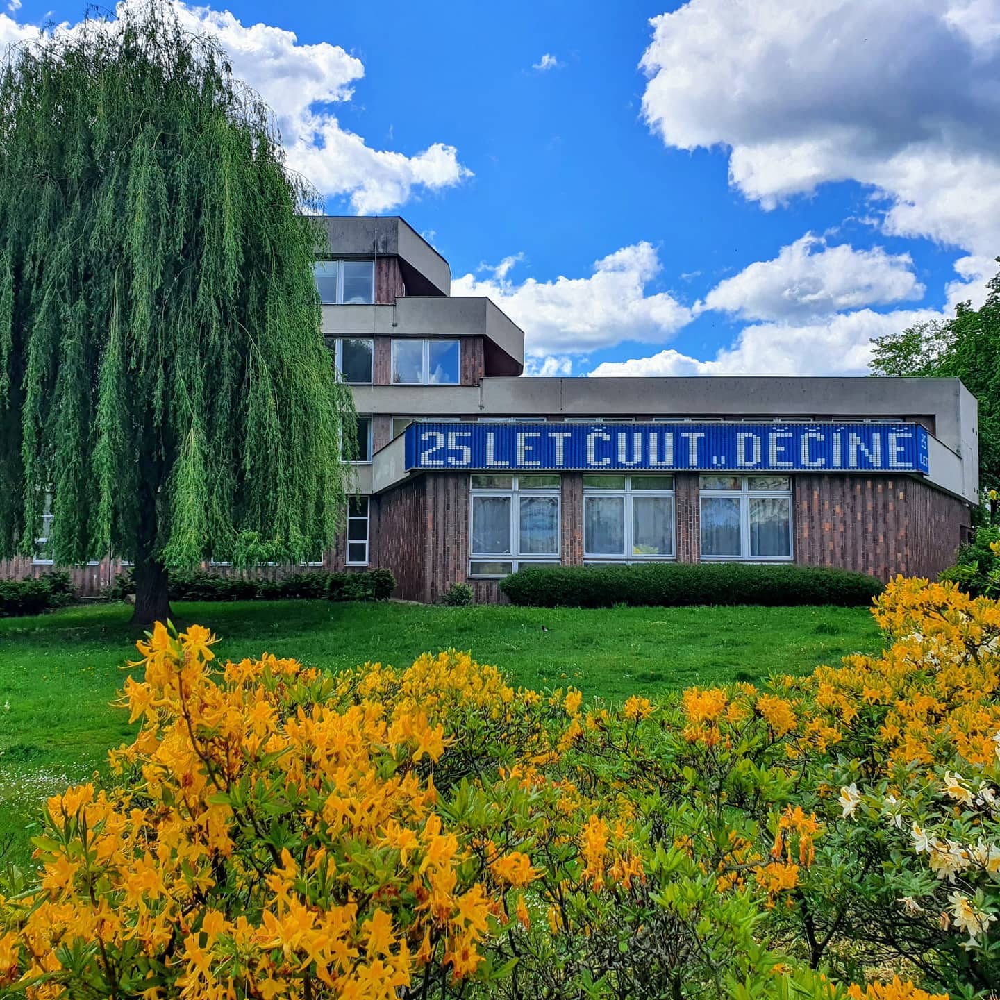

Co je Tabula Rasa
V roce 2019 vzniká první koncepce sochy, která je výsledkem mezifakultní spolupráce a mezioborového dialogu v rámci FA, Fakulty jaderné a fyzikálně inženýrské a Fakulty elektrotechnické. Cílem sochy je materializovat synergii mezi fakultami a zároveň popularizovat vědu a aktivity na FJFI. Inspirací pro vytvoření sochy nebo artefaktu je dialog mezi umělci a vědci a komunikace v rámci řady workshopů. Design sochy se pohybuje na pomezí abstraktní a konkrétní reprezentace a snaží se předat zážitek z částicové fyziky pozorovatelům z širšího publika. Centrálním tématem projektu (skleněné, multimediální sochy) je fenomén interference. Průhlednost skla vytváří iluzi prostorového pohybu. Socha je doplněna elektroinstalací, která světelně reaguje na experimenty probíhající v urychlovači Evropská organizace pro jaderný výzkum.
Kde se nachází.
Děčín je malebné město ležící v severní části České republiky, nedaleko hranic s Německem. Nachází se v kraji Ústecký kraj a je jedním z významných kulturních a historických center regionu. Město je obklopeno nádhernou přírodou, kterou tvoří Labské pískovce a krásné Labské údolí.
Děčín má bohatou historii, která sahá až do středověku. V centru města můžete najít zachovalé historické památky, jako je Děčínský zámek, který dominuje nad městem, a řadu malebných uliček a tržišť. Město je také známé svými kulturními akcemi a festivaly, které přilákají návštěvníky z celého regionu.
Děčín je ideálním výchozím bodem pro výlety do okolní přírody, ať už chcete pěšky objevovat Labské pískovce nebo podnikat cyklistické výpravy po malebných cyklostezkách. Město nabízí také širokou škálu restaurací a kaváren, kde si můžete vychutnat místní kulinářské speciality. Děčín je zkrátka místem, kde se snoubí historie, kultura a krásy přírody, což ho činí atraktivním místem pro návštěvu.
ČVUT v Děčíně
České vysoké učení technické ČVUT v Děčíně je prestižní vzdělávací instituce nacházející se v krásném městě Děčín, které je součástí Ústeckého kraje v severní části České republiky. Tato univerzita je jednou z poboček Českého vysokého učení technického, které je známé svým špičkovým technickým vzděláním a inovativním výzkumem.
ČVUT v Děčíně se specializuje na technické a inženýrské obory a nabízí studentům vysokoškolské vzdělání na nejvyšší úrovni. Univerzita má moderní vybavení, laboratoře a kvalifikovaný pedagogický sbor, což umožňuje studentům získat hluboké znalosti a dovednosti v oblastech jako informatika, elektrotechnika, strojírenství a další.
Studenti ČVUT v Děčíně mají také možnost zapojit se do výzkumných projektů a získávat praktické zkušenosti, což jim dává konkurenční výhodu na trhu práce. Univerzita je zároveň aktivním členem místní komunity a spolupracuje s místními firmami a institucemi. To vytváří inspirující prostředí pro studium a rozvoj.
